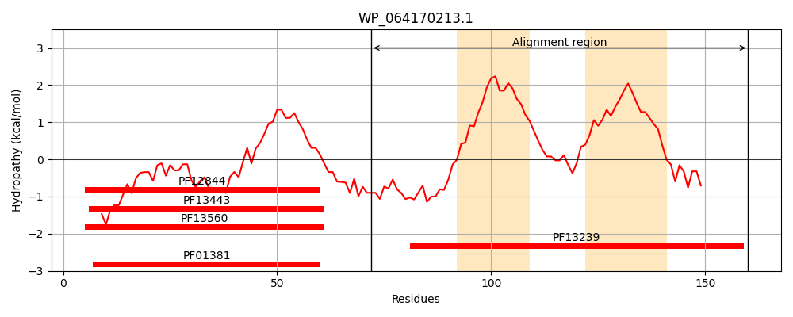
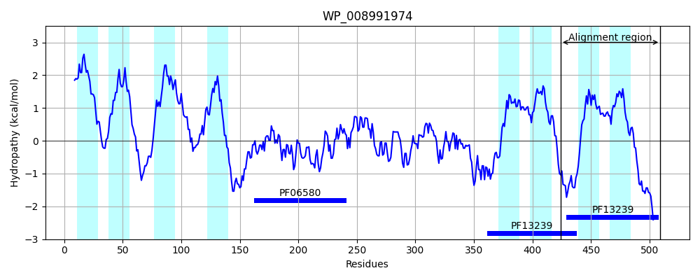
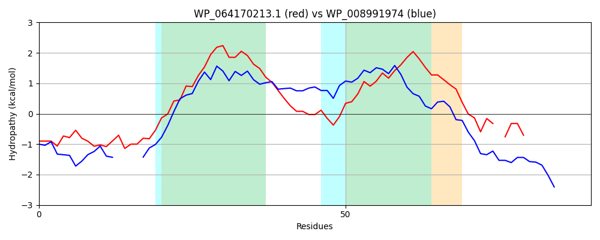

Hit Accession: WP_008991974
Hit TCID: 9.B.304.1.4
Hit Description: gnl|BL_ORD_ID|20764 gnl|TC-DB|WP_008991974.1|9.B.304.1.4 histidine kinase [Galbibacter marinus]
Mach Len: 90
e:0.000382
Query TMS Count : 2
Hit TMS Count: 8
TMS-Overlap Score: 1.250000
Predicted Substrates:None
BLAST Alignment:
| Protein Hydropathy Plots: | |
|---|---|
|  |  |
Pairwise Alignment-Hydropathy Plot: | |
|  | |